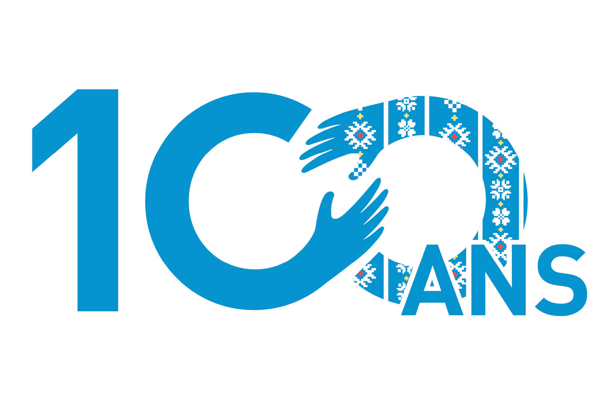
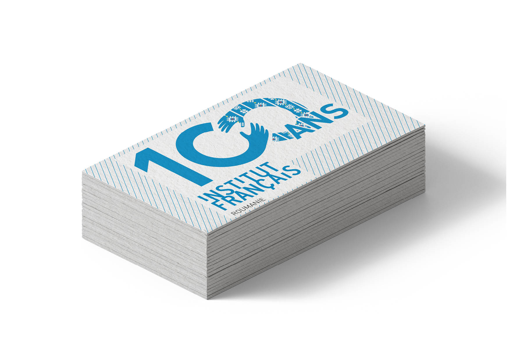
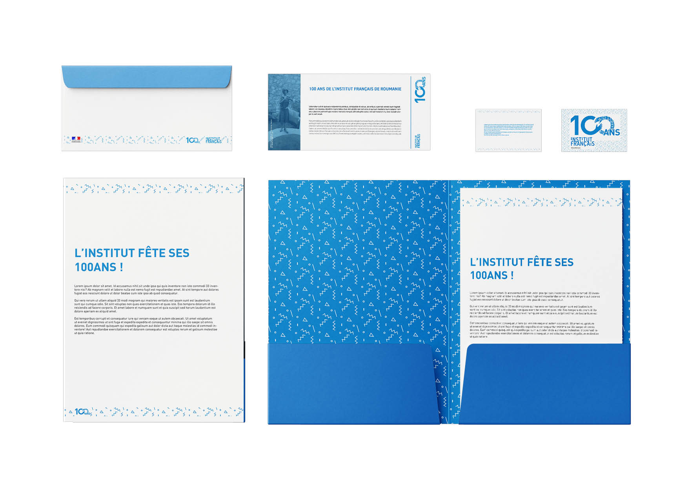
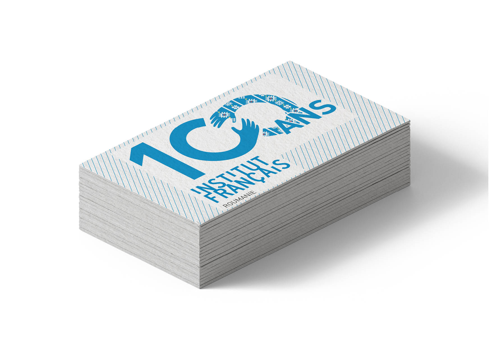
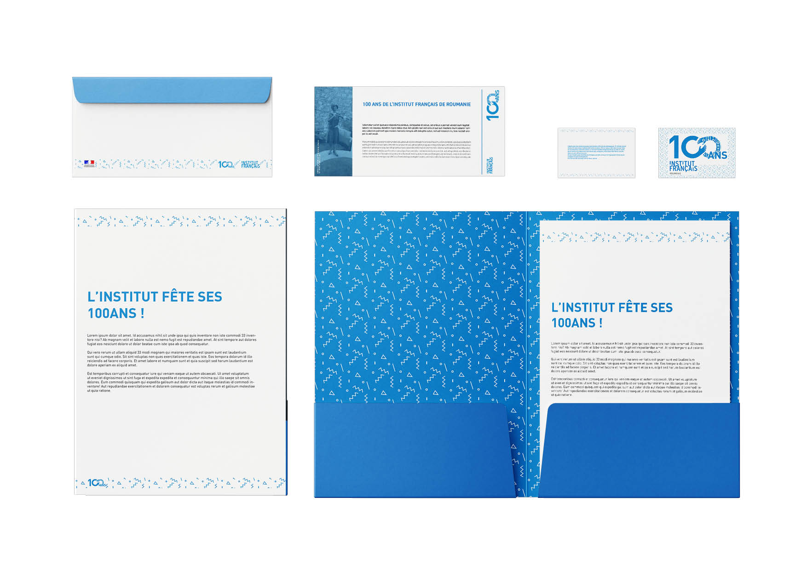

French Institute of Romania Centenary
→ To celebrate the centenary of the French Institute of Romania, the institution launched a call for projects for a logo and a graphic charter to mark the event. Their request was to represent the friendship that has united the two cultures for a century now.
 


